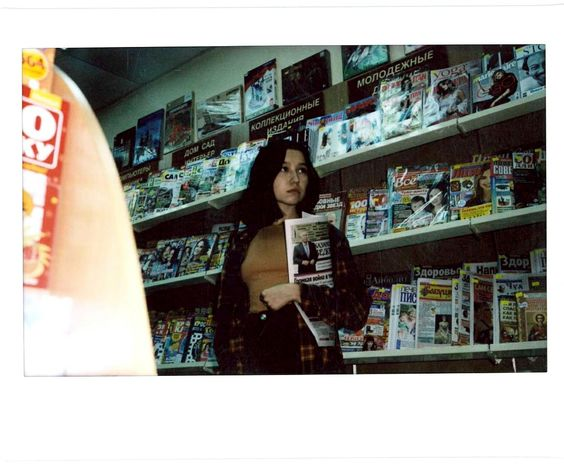
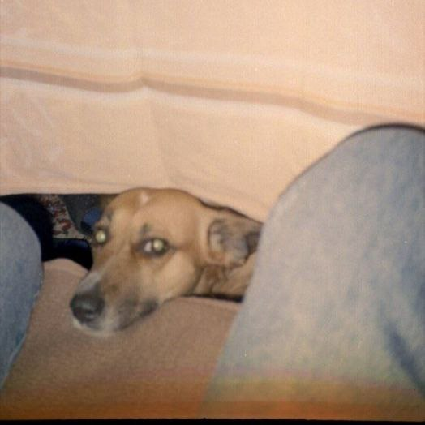
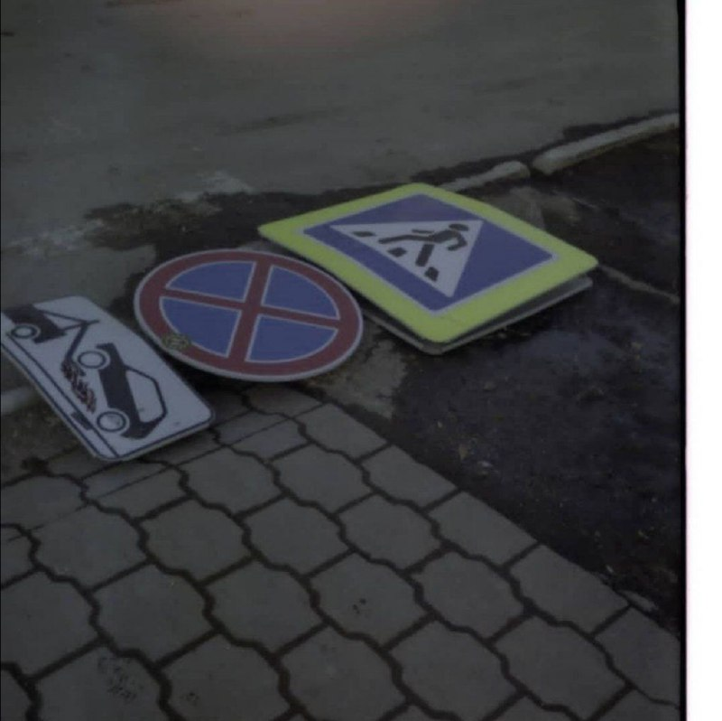

Как начать фотографировать на фотоплёнку
Предисловие
Возможно, это новая волна моды на ретро, винтаж и тому подобное, но факт остается фактом. Несмотря на это,
даже сейчас многие люди смотрят на данное хобби не без предрассудков. Самые популярные из них:
1. Фотоаппараты тяжело найти/достаются только от дедушек и бабушек/только
старые мыльницы
2. Пленка безумно дорогая, ее тяжело найти, а проявить так вообще непосильная задача
3. В фотоаппарате непонятные настройки, все вручную, я не разберусь
И как результат — человек либо продолжает жить в этих стереотипах и ничего не делать, либо пытается и
начинает осваивать новое увлечение. Конечно, с таким явлением как лень ничего поделать нельзя, ибо если
нет желания, то вряд ли захочешь попробовать. Но пройдемся по стереотипам по порядку.
Основные мифы о пленочной фотографии
1. Фотоаппараты «тяжело» найти
Одно из заблуждений, которое легче всего преодолеть. Для этого можно зайти на тот же Авито или
поискать профильные сайты, где можно увидеть огромное число фотоаппаратов
2. «Проблемы» с пленкой
Конечно, в наше время найти пленку несколько сложнее, чем это было во времена пика популярности
пленочной фотографии, но утрировать не стоит. Есть достаточное число мест, где можно и купить,
и проявить, и отсканировать свои кадры. Например, фотопроект или фотолаб, а также местные конторки
3. В фотоаппарате «непонятные» настройки
В любом деле, особенно новом для нас, всегда что-то придется осваивать. Настройки пленочных фотоаппаратов
не самая сложная вещь на свете — напротив, зачастую разобраться в нем проще, чем в современных цифровых,
которые изобилуют миллионами режимов, кнопочек, колесиков и тому подобное. К тому же ощущение от
ручной съемки намного сильнее и приятнее, чем от цифровой, где можно щелкать 10 кадров в секунду и
не думать о том, куда направляешь фотоаппарат
В общем, как можно заметить, все стереотипы и мифы насчет пленочной фотографии достаточно сильно
преувеличены и служат отговорками для тех, кто просто ленится. Не будем обращать на них внимания и
познакомимся с тем с чего лучше начать.
Какой фотоаппарат выбрать?
Первый вопрос с которым вы столкнетесь — это какой фотоаппарат выбрать. Если вам повезло и у вас остался
от родственников старенький «Зенит», «Смена» или мыльницы, то смело можете не думать об этом и начать
изучать то, что есть. Если вы не из тех счастливчиков, то необходимо бороздить просторы интернета или спрашивать
у знакомых, но проще всего найти на Авито, простую и недорогую. По себе могу сказать, что если вам хочется
действительно прочувствовать и изучить пленочную фотографию, то начинать лучше с какой-нибудь простой,
не изобилующей настройками камеры. Тот же «Зенит» (например, 122, 122-к и более ранние модели) будет отличным
вариантом для новичка. Из мыльниц могу посоветовать Olympys, который до сих пор довольно популярен.
Конечно, советские камеры имеют свой шарм, но по надежности и возможностям, к сожалению, зачастую не
сравнятся с Nikon, Canon, Olympus, Pentax и т.д., но начать можно и с них.
Фотоаппарат выбрал, а где можно купить саму плёнку?
Скорее всего там же, где и выбирали фотоаппарат и опять же самый популярный вариант — купить на Авито.
Объявлений с продажей старой фототехники пруд-пруди, но тут есть и небольшая загвоздка — зачастую их
публикуют люди, которые просто нашли фотоаппарат у себя на полке и не в курсе подробностей о его
работоспособности, поэтому следует быть осторожным и перед покупкой ознакомиться с моделью в интернете,
изучив отзывы о ней, типичные проблемы и т.п. Лично я два раза покупала фотоаппараты через Авито и не
возникало никаких проблем.
Еще один вариант приобретения — профильные площадки, форумы, где есть темы а-ля «барахолка» с объявлениями
от пользователей. Например, pohotsale.ru, fotoussr.ru. Да, возможно тут выйдет немного дороже, но и риск меньше,
к тому же обилие моделей фотоаппаратов поражает.
Неоднократно слышала от людей, что покупают технику и на западных ресурсах (eBay, Amazon, Ali).
Честно скажу, что никогда не пользовалась этими сервисами для чего-либо и не могу сказать ничего
хорошего или плохого про данный способ покупки фототехники.
Про пленку
Как вы могли понять, с пленкой сейчас серьезных проблем нет, но у новичка могут возникнуть проблемы с тем
какую выбрать. Цена катушки в профильных магазинах варьируется от 200 до 900 рублей. Наиболее распространенные
— Kodak Color+ 200, Ilford PAN 400 (ч/б) и т.д. Цифры в названии — это чувствительность пленки (ISO).
Начинать лучше с цифры «400», ибо проэкспонировать кадр будет проще.
Небольшой лайфхак — начинайте снимать на ч/б — в большинстве своем кадры будут выглядеть отлично,
а париться о насыщенности цветов не придется
Не советую начинать с дорогих пленок (по типу Kodak Ektar, Portra), ибо скорее всего первые кадры будут не
самыми лучшими и тратить деньги на это не стоит. Купить можно в магазинах фотопроект, fotolab и во многих других.
Часто пленку продают на тематических секондах или развалах. Там, кстати, можно ухватить пару катушек просроченной
пленки, что довольно-таки ценно.


Заправил и готов снимать!
А теперь начинается самое интересное — начало съемки. Как я уже говорилa, пленочные фотоаппараты зачастую
не изобилуют настройками, но их необходимо знать и уметь расставлять. Конечно, это тема для отдельной статьи,
но базовый алгоритм выглядит так:
1. Загрузив пленку, выставляем на фотоаппарате чувствительность пленки (ISO)
2. Если в вашем фотоаппарате есть встроенный экспонометр — это значительно упрощает задачу с настройкой
выдержки и диафрагмы. Если нет, то тут либо на глаз (что сначала будет почти невозможно понять, ибо нужен
опыт), либо можно использовать внешний экспонометр или приложение на телефоне (например, LightMeter),
который подскажет какие настройки поставить
3. Безусловно, важно сфокусироваться. Делается это вручную (за исключением мыльниц и одних из последних
пленочных камер). На объективе часто есть отметки о расстоянии, но в самом видоискателе обычно есть кружочек,
поделенный пополам и изображения в этих частях необходимо «свести» (так называемые «клинья Додена»).
В случае с дальномерными камерами, необходимо «соединить» изображение видоискателя и объектива
4. Взводим затвор и делаем первый кадр. Потрясающе. Советую держать камеру достаточно крепко, чтобы она не
дергалась, ибо велик риск смазать кадр. На кнопку спуска затвора лучше нажимать тоже без особого фанатизма
(особенно, если он механический), ибо это подергивание камеры отразится на снимке, особенно с длинной выдержкой